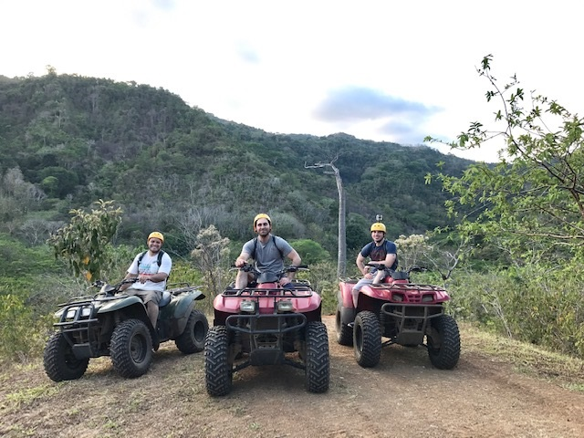
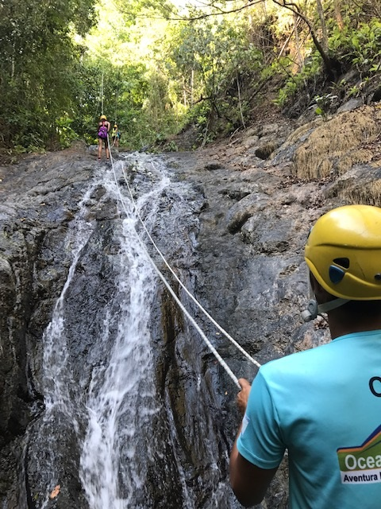
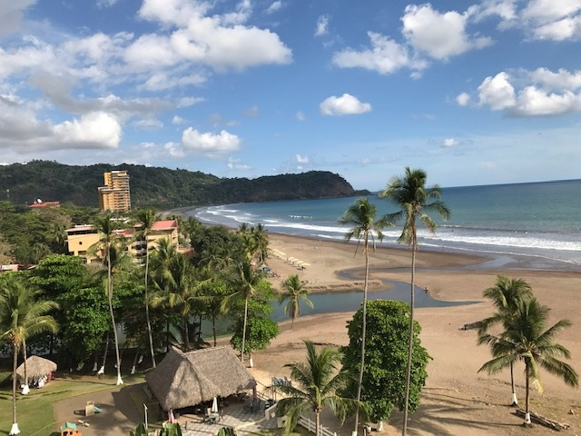

A few years ago one of my best friends decided to have his bachelor party in Costa Rica. I was lucky enough to be invited and I've included some of the fun moments we had on this trip while exploring this beautiful country. I was amazed by the hospitality of the natives and aslo the beautiful lush forests and beaches. I would highly recommend a trip to anyone who is interested to going to Costa Rica to make a vacation plan as soon as possible.


As I had mentioned before, the ranch that we were on at one point had us rappel down a waterfall. We had a small group of us that hiked to the top of a waterfall with tqo guides and then we rapelled down with the guides. This had been the first time any of us had done anything like this and it was a real fun experience. We all had to work as a team and this was a great team building event that brought our group closer. We also had great guides that were funny and added great appeal to the adventure.
Fun Fact:Costa Rica is the second largest exporter of bananas in the world.
On our next adventure on this ranche we went ziplining. None of us had ever been ziplining and this was an amazig experience. We ziplined across long open valleys that reminded me of something out of Jurrasic Park. We ziplined from one station in a tree to the next station in another tree for what seemed like miles.

Costa Rica is a beautiful country with lots of beautiful countryside and lovely people. I would recommend that everyone should at least visit Costa Rica once to enjoy a beautiful outdoor and beach experience. The American dollar was strong in Costa Rica so everything was relatively inexpensive and people were friendly. Costa Rica has great weather year around so you can have a great trip almost any time of the year.
Below I've listed a travel blog for Costa Rica and three attractions with links that offer more detailed information about each attraction to visit.
| Top Attractions in Costa Rica | Websites |
|---|---|
| Manuel Antonio National Park | Manuel Antonio National Park |
| Arenal Volcano (Volcan Arenal) | Arenal Volcano (Volcan Arenal) |
| Monteverde and the Cloud Forests | Monteverde and the Cloud Forests |
Posted by: Juan Vega
Contact information: Juan.Vega1080@Gmail.com.